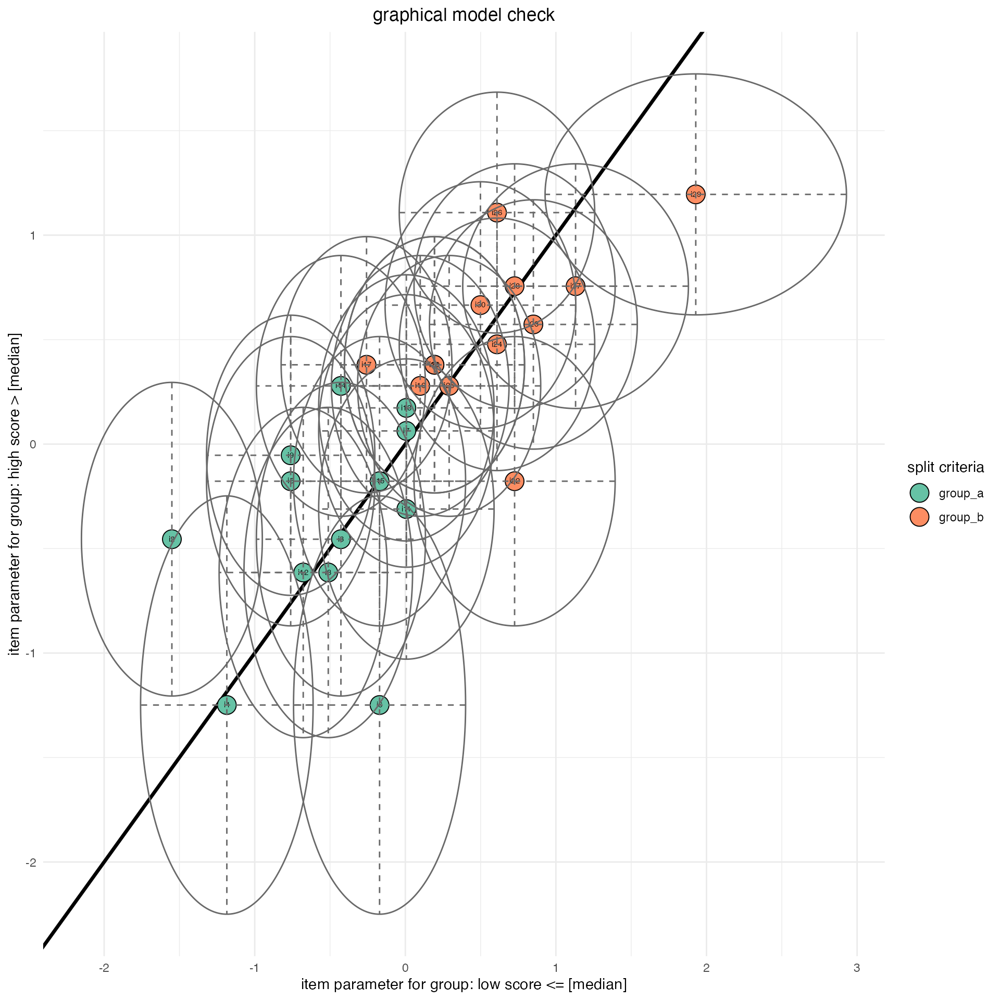

vignettes/introduction_to_tmt.Rmd
introduction_to_tmt.RmdThis package provides a collection of functions to simulate data, estimate item parameters and calculation of likelihood ratio test in multistage designs. In multistage tests, different groups of items (module) are presented to test persons depending on their response behavior to previous item groups. Multistage testing is thus a simple form of adaptive testing. If data are collected on the basis of such a multistage design and the items are estimated using the Conditional Maximum Likelihood (CML) method, Glas (1988) has shown, that the item parameters are biased. While Eggen & Verhelst (2011) propose to avoid the bias using the marginal maximum likelihood (MML) method, Zwitser & Maris (2015) showed in their work, that taking the applied multistage design in consideration and including it in the estimation of the item parameters, the estimation of item parameters is not biased using the CML method. In this package, the approach of Zwitser & Maris (2015) is implemented. It was ensured that the necessary specification of the multistage design is as simple as possible and will be described in detail below. For the multistage design, the elementary symmetric function has to be calculated several times, so that this is as efficient as possible, the relevant functions have been written in Rcpp (Eddelbuettel & Balamuta, 2017). In addition to estimating the item parameters for multistage designs, it is also possible to estimate the item parameters for conventional designs. In order to further increase the efficiency, the algorithm of Verhelst, Glas, & Van der Sluis (1984) was used for the elementary symmetry function.
The package is well tested, but errors can still be exist. If you find a bug, please report it to us (with an working example) preferred via github: issues
Below are a few sample applications of our package, which should provide information for the start:
For the estimation of item parameters of a simple 1-PL model, the function tmt_rm must be called. Here only the data set has to be passed (as matrix or data.frame) to estimate item parameters. Additional arguments allow to turn off the estimates of the standard errors (for example, for time reasons) or to switch from “nlminb” to “optim” (as in the example below). Per default the items are normalized to sum = 0 as recommended by Glas (2016).
# simulate some data
dat <- tmt:::sim.rm(theta = 100,b = 10,seed = 1111)
# estimate item parameters
dat.rm <- tmt_rm(dat = dat, optimization = "optim")
# print summary
summary(dat.rm)
#>
#> Call:
#> tmt_rm(dat = dat, optimization = "optim")
#>
#>
#> Results of Rasch model (nmst) estimation:
#>
#> Difficulty parameters:
#> est.b_i01 est.b_i02 est.b_i03 est.b_i04 est.b_i05 est.b_i06
#> Estimate -0.3065826 0.6990179 -0.04842019 0.8140703 -0.4109142 -3.574831
#> Std. Error 0.2221598 0.2310373 0.22141722 0.2341569 0.2230645 0.473431
#> est.b_i07 est.b_i08 est.b_i09 est.b_i10
#> Estimate 0.3700940 0.9935109 0.5321103 0.9319442
#> Std. Error 0.2246092 0.2399839 0.2273269 0.2378492
#>
#> CLL: -337.1962
#> Number of iterations: 35
#> Number of parameters: 10In order to estimate the item parameters in a multistage design, the corresponding design must first be specified. For the multistage design, it is necessary that each module is defined, as exemplified below with M1, M2, etc. The name of the module is arbitrary. The name of the module follows with “=~” the vector with the items of the respective path. If all modules have been defined, the start module(s) must be defined. The starting module(s) is/are described with a name and the sign “==” (double equal sign) followed by the particular module. Each path has a name followed by the “:=” character in the starting module and all other modules in that path. Each module must be followed in parentheses by the minimum (first number) and maximum (second number) of solved items in the respective module.
Keeping the syntax is very important, otherwise the design can not be translated.
| component | syntax | example |
|---|---|---|
| module | =~ | M1 =~ c(i1, i2, i3, i4, i5) |
| pre conditions | == | xcon(1:3) |
| path | := | p1 := M2(minSolved,maxSolved) |
| stages | += or ++ | p1 := M2(minSolved,maxSolved) += M1(minSolved, maxSolved) |
To estimate the item parameters the function tmt_rm must be called with the additional information of the multistage design. Additional arguments allow to turn off the estimates of the standard errors (for example, for time reasons) or to switch from “nlminb” to “optim” (as in the example below).
# Example for multistage-design
mstdesign <- "
M1 =~ c(i1, i2, i3, i4, i5)
M2 =~ c(i6, i7, i8, i9, i10)
M3 =~ c(i11, i12, i13, i14, i15)
# define path
p1 := M2(0,2) + M1(0,5)
p2 := M2(3,5) + M3(0,5)
"
# generate item parameters with corresponding names to the multistage design
items <- seq(-1,1, length.out = 15)
names(items) <- paste0("i",1:length(items))
# generate random data under given multistage design
dat <- tmt_sim(mstdesign = mstdesign,
items = items,
persons = 500)
# estimate the item parameters under the given multistage-design
dat.rm <- tmt_rm(dat = dat,
mstdesign = mstdesign,
optimization = "optim")
# print summary of item parameters
summary(dat.rm)
#>
#> Call:
#> tmt_rm(dat = dat, mstdesign = mstdesign, optimization = "optim")
#>
#>
#> Results of Rasch model (mst) estimation:
#>
#> Difficulty parameters:
#> est.b_i1 est.b_i2 est.b_i3 est.b_i4 est.b_i5 est.b_i6
#> Estimate -0.9519879 -0.5948041 -0.8072189 -0.5597664 -0.1230628 -0.2325085
#> Std. Error 0.1480524 0.1461040 0.1469520 0.1460509 0.1474722 0.1025311
#> est.b_i7 est.b_i8 est.b_i9 est.b_i10 est.b_i11 est.b_i12
#> Estimate -0.0002863053 -0.04662614 0.1017790 0.3172144 0.3878843 0.3498366
#> Std. Error 0.1022477384 0.10224977 0.1023375 0.1029688 0.1521489 0.1522439
#> est.b_i13 est.b_i14 est.b_i15
#> Estimate 0.6745733 0.7132797 0.7716936
#> Std. Error 0.1525688 0.1527759 0.1531548
#>
#> CLL: -2035.25
#> Number of iterations: 69
#> Number of parameters: 15In order to estimate the item parameters in a cumulative multistage design, the corresponding design must first be specified. For the multistage design, it is necessary that each module is defined, as exemplified below with M1, M2, etc. The name of the module is arbitrary. The name of the module follows with “=~” the vector with the items of the respective module. If all modules have been defined, the start module(s) must be defined. The starting module(s) is/are described with a name and the sign “==” (double equal sign) followed by the particular module. Finally, all pathes must be defined. Each path has a name followed by the “:=” character in the starting module and all other modules (stages) in the path. Each module must be followed in parentheses by the minimum (first number) and maximum (second number) of solved items at that stage. For a cumulative design, the number of minimum and maximum solved items from the previous + the current module must be specified at the current stage. For this purpose the specifing character becomes “+=” instead of “+”.
Keeping the syntax is very important, otherwise the design can not be translated.
| component | syntax | example |
|---|---|---|
| module | =~ | M1 =~ c(i1, i2, i3, i4, i5) |
| pre conditions | == | xcon(1:3) |
| path | := | p1 := M2(minSolved,maxSolved) |
| stages | += or ++ | p1 := M2(minSolved,maxSolved) += M1(minSolved, maxSolved) |
To estimate the item parameters the function tmt_rm must be called with the additional information of the multistage design. Additional arguments allow to turn off the estimates of the standard errors (for example, for time reasons) or to switch from “nlminb” to “optim” (as in the example below).
# Example for multistage-design
mstdesign <- "
M1 =~ paste0('i',21:30)
M2 =~ paste0('i',11:20)
M3 =~ paste0('i', 1:10)
M4 =~ paste0('i',31:40)
M5 =~ paste0('i',41:50)
M6 =~ paste0('i',51:60)
# define path
p1 := M1(0, 5) += M2( 0,10) += M3
p2 := M1(0, 5) += M2(11,15) += M4
p3 := M1(6,10) += M5( 6,15) += M4
p4 := M1(6,10) += M5(16,20) += M6
"
# generate item parameters with corresponding names to the multistage design
items <- seq(-1,1, length.out = 60)
names(items) <- paste0("i",1:length(items))
# generate random data under given multistage design
dat <- tmt_sim(mstdesign = mstdesign,
items = items,
persons = 1000)
# estimate the item parameters under the given multistage-design
dat.rm <- tmt_rm(dat = dat,
mstdesign = mstdesign,
optimization = "optim")
# print summary of item parameters
summary(dat.rm)
#>
#> Call:
#> tmt_rm(dat = dat, mstdesign = mstdesign, optimization = "optim")
#>
#>
#> Results of Rasch model (mst) estimation:
#>
#> Difficulty parameters:
#> est.b_i1 est.b_i2 est.b_i3 est.b_i4 est.b_i5 est.b_i6
#> Estimate -1.0214597 -0.8480698 -0.9021802 -1.196471 -0.7504720 -0.9563225
#> Std. Error 0.1105092 0.1104046 0.1103743 0.111210 0.1106039 0.1104011
#> est.b_i7 est.b_i8 est.b_i9 est.b_i10 est.b_i11 est.b_i12
#> Estimate -0.9346559 -0.7395973 -0.5644536 -0.6523041 -0.64198845 -0.67585079
#> Std. Error 0.1103835 0.1106377 0.1115034 0.1109932 0.09773624 0.09774211
#> est.b_i13 est.b_i14 est.b_i15 est.b_i16 est.b_i17
#> Estimate -0.7520932 -0.65045381 -0.48937418 -0.47235402 -0.56576865
#> Std. Error 0.0978213 0.09773602 0.09793408 0.09797899 0.09778907
#> est.b_i18 est.b_i19 est.b_i20 est.b_i21 est.b_i22
#> Estimate -0.33527534 -0.44678331 -0.29206601 -0.27905631 -0.31368885
#> Std. Error 0.09850956 0.09805513 0.09873964 0.07489649 0.07499404
#> est.b_i23 est.b_i24 est.b_i25 est.b_i26 est.b_i27
#> Estimate -0.13722303 -0.22489517 -0.17320568 -0.25952131 -0.04383874
#> Std. Error 0.07461171 0.07476606 0.07466661 0.07484634 0.07452384
#> est.b_i28 est.b_i29 est.b_i30 est.b_i31 est.b_i32
#> Estimate -0.16370665 -0.08246540 -0.04383874 -0.02196023 0.09617311
#> Std. Error 0.07465097 0.07455065 0.07452384 0.10143142 0.10081158
#> est.b_i33 est.b_i34 est.b_i35 est.b_i36 est.b_i37 est.b_i38
#> Estimate 0.06001769 0.1501522 0.1141969 0.1141969 0.1860053 0.2307142
#> Std. Error 0.10097424 0.1006129 0.1007394 0.1007394 0.1005100 0.1004143
#> est.b_i39 est.b_i40 est.b_i41 est.b_i42 est.b_i43 est.b_i44
#> Estimate 0.1680900 0.5529060 0.5141339 0.3490851 0.4271537 0.4271537
#> Std. Error 0.1005585 0.1007862 0.1020246 0.1028521 0.1024035 0.1024035
#> est.b_i45 est.b_i46 est.b_i47 est.b_i48 est.b_i49 est.b_i50
#> Estimate 0.5141339 0.6388961 0.5525992 0.5333779 0.6676172 0.7729093
#> Std. Error 0.1020246 0.1017014 0.1018974 0.1019579 0.1016636 0.1016413
#> est.b_i51 est.b_i52 est.b_i53 est.b_i54 est.b_i55 est.b_i56
#> Estimate 0.7456113 0.5106946 1.0034948 0.7864415 0.7456113 0.9623584
#> Std. Error 0.2266517 0.2358187 0.2193771 0.2253102 0.2266517 0.2203492
#> est.b_i57 est.b_i58 est.b_i59 est.b_i60
#> Estimate 0.5106946 1.0034948 1.0437915 1.2496891
#> Std. Error 0.2358187 0.2193771 0.2184928 0.2150058
#>
#> CLL: -15827.79
#> Number of iterations: 148
#> Number of parameters: 60The likelihood ratio test of Andersen (Andersen, 1973) is also implemented. The estimated item parameters either from an simple 1-PL model or from a 1-PL model with multistage design could be passed to the function tmt_lrtest. This function is also a generic function (like tmt_rm), which calls the specific function for data with/without multistage design. For the application on very large data sets it is possible to parallelize the tmt_lrtest function. For this purpose only the amount of cores has to be passed as additional argument (it is recommended to use three cores, if possible).
# simulate some data
dat_nmst <- tmt:::sim.rm(theta = 100,b = 10,seed = 1111)
# estimate item parameters
dat_nmst_rm <- tmt_rm(dat = dat_nmst, optimization = "optim")
# calculate likelihood ratio-test
dat_lrt_nmst <- tmt_lrtest(dat_nmst_rm, optimization = "optim")
# print summary
summary(dat_lrt_nmst)
#>
#> Likelihood ratio test (Andersen):
#>
#> Value (Chi^2): 8.629
#> df (Chi^2): 9
#> p-value: 0.472
# example of multistage-design
mstdesign <- "
M1 =~ c(i1, i2, i3, i4, i5)
M2 =~ c(i6, i7, i8, i9, i10)
M3 =~ c(i11, i12, i13, i14, i15)
# define path
p1 := M2(0,2) + M1(0,5)
p2 := M2(3,5) + M3(0,5)
"
# generate item parameters with corresponding names to the multistage design
items <- seq(-1,1, length.out = 15)
names(items) <- paste0("i",1:length(items))
# generate random data under given multistage design
dat_mst <- tmt_sim(mstdesign = mstdesign,
items = items,
persons = 500,
seed = 1111)
# estimate the item parameters under the given multistage-design
dat_mst_rm <- tmt_rm(dat = dat_mst,
mstdesign = mstdesign,
optimization = "optim")
# calculate likelihood ratio-test
dat_lrt_mst <- tmt_lrtest(dat_mst_rm, optimization = "optim")
# print summary
summary(dat_lrt_mst)
#>
#> Likelihood ratio test (Andersen) for multistage designs:
#>
#> Value (Chi^2): 8.926
#> df (Chi^2): 14
#> p-value: 0.836For a graphical comparison of estimated item parameters for each sub group, we provide a so-called graphical model check. Several options are available for further specification of the plot (internally the package ggplot2 is used)
# example of multistage-design
items <- seq(-1,1,length.out = 30)
names(items) <- paste0("i",1:30)
persons = 100
mean = 0
sd = 1
dat <- tmt:::sim.rm(theta = persons, b = items, 1111)
dat.rm <- tmt_rm(dat, optimization = "optim")
dat.lrt <- tmt_lrtest(dat.rm, split = "median", optimization = "optim")
info <- rep(c("group_a","group_b"),each = 15)
names(info) <- paste0("i",1:30)
drop <- c("i1","i18","i20","i10")
tmt_gmc(object = dat.lrt,
ellipse = TRUE,
info = info,
drop = drop,
title = "graphical model check",
alpha = 0.05,
legendtitle = "split criteria")